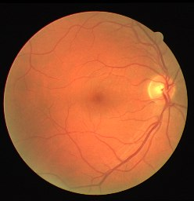

Fundus01 / 06Reference masks · workflow illustration
COMPUTER VISION · RESEARCH
Artery–vein segmentation
Attention-WNet and Swin-WNet for retinal fundus images, with vessel-specific learning and analysis of thin vessels and bifurcations.
TensorFlow / Keras · Image segmentation